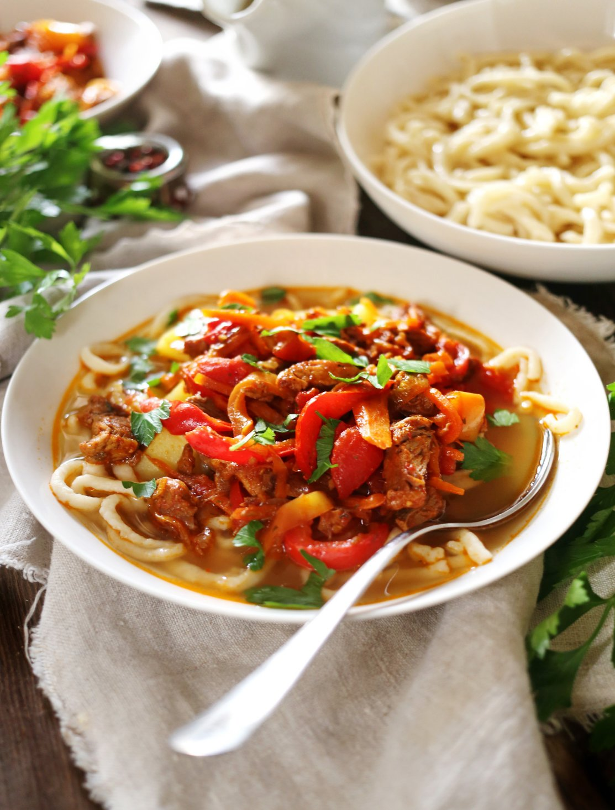

Очень известное среднеазиатское блюдо, которое на самом деле пришло из Китая. Лагман – блюдо обязательно с лапшой, с овощами и мясом. Какое мясо брать, баранину или говядину, – дело личного вкуса. Что касается овощей, то основной набор – лук, морковь, сладкий перец и помидоры. Лучше всего класть овощи по сезону.